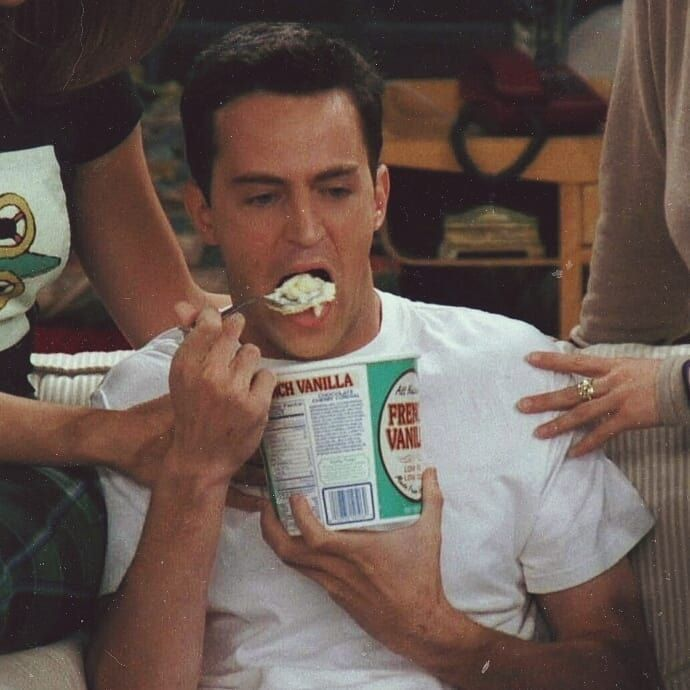
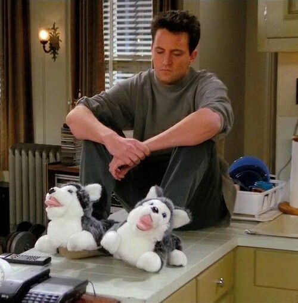
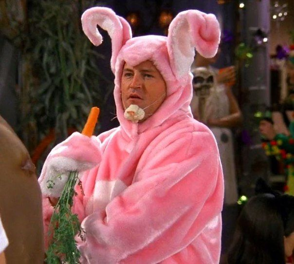
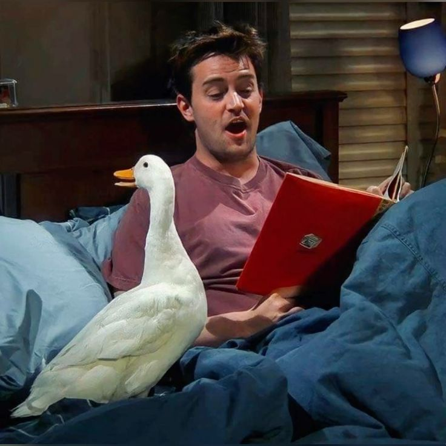

Conheça o Chandler Bing
Chandler Bing é conhecido principalmente pelo seu humor sarcástico e pelas piadas feitas nos momentos mais inesperados. Seu jeito engraçado e irônico se tornou uma das marcas mais famosas de Friends, trazendo leveza até para situações difíceis.
Apesar da aparência descontraída, Chandler é um personagem bastante inseguro emocionalmente. Muitas vezes ele usa o humor como forma de esconder medos, inseguranças e dificuldades para demonstrar sentimentos. Essa característica torna o personagem mais humano e próximo do público.


Ao longo da série, Chandler passa por uma grande evolução pessoal. No começo, ele evita relacionamentos sérios e demonstra medo de compromisso, mas aos poucos amadurece e aprende a lidar melhor com suas emoções e responsabilidades.
Sua amizade com Joey Tribbiani é uma das mais divertidas da série, marcada por brincadeiras, companheirismo e momentos inesquecíveis. Os dois criam uma conexão leve e engraçada que conquista os fãs até hoje.


Além disso, seu relacionamento com Monica Geller mostra um lado mais sensível e carinhoso da personagem. Chandler mistura humor, emoção e autenticidade, tornando-se um dos personagens mais queridos da série.